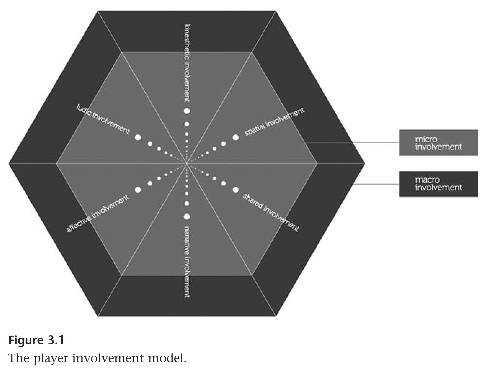

Worldbuilding Through Player Involvement
Player Involvement



A brief history of 2D navigation and collider-based events in games
A question for all of you to think about--
How can we make use of player agency, avatar performance, and scene design to tell a story related to space, control, and collecting?
Past Student Projects
for inspiration...!
As Above As Below explores the modern Western idea of the human body and its relation to cleanliness, holiness, and purity as well as its relationship to filth, waste, and “impurities.”
Days Dark is a short, alternative walking simulator game set in a mysteriously barren land. The protagonist (player) is a middle-aged woman carrying a basket of valuable food to feed her family. She needs to survive this treacherous land filled with hungry dogs, hungry ghouls, and an oppressive king demanding her tribute. The gameplay is designed to imitate walking and invoke the physical pain of running when encountering enemies by rapidly altering two buttons to move forward.
Days Dark is an ode to the forgotten matriarchs, who carried generations of family, including my own, through the darkest days. Loosely based on the events during the Great Leap Forward in my home province, this game explores the pain, oppression, and marginality experienced by my grandmother, her sisters, and their mother’s forgotten sacrifices living under traditional patriarchy.
Panopticon is a 2D illustrated, 3rd person adventure game with interactive elements that are revealed as the space is navigated. Play as a bot traveling through an alternate reality internet simulation. The world you defined as home, made up of 0’s and 1’s, has become physical reality. Your goal is to make it through the seven levels of the deep web without being noticed by the guard tower in the center. Do your best to travel through this panopticon-like maze on your path to self discovery of what it means to be a mechanism of the internet.
Grandma’s Ocean is an attempt at seeking connections and re-imagining with personal narrative through the medium of game-making, collage and personal narrative. 3 women in 3 different time periods, the game characters’ lives and paths mirror and build on top of each other. Their generation connection cycles through different political and historical influences, carrying love, trauma, and tattered ideas of home to each of their lives and individual actions. This is my attempt to close some gaps between myself and her and her.